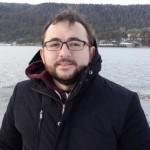

Kadromuz
Yrd. Doç. Dr. İsmail Numan Telci

İsmail Numan Telci lisans derecesini 2006 yılında İstanbul Üniversitesi Siyasal Bilgiler Fakültesi Kamu Yönetimi bölümünde tamamladı. Nisan 2006dan Eylül 2007ye kadar Londrada dil eğitimi alan Telci 2008 yılında Almanyada Hochschule Bremende Avrupa Çalışmaları alanında Yüksek Lisans programını tamamladı. Belçikadaki Leuven Üniversitesinde 3 aylık bir araştırma dönemi geçiren Telci 2009 Ocak ayında Sakarya Üniversitesi Uluslararası İlişkiler Bölümünde doktorasına başladı. Aynı yıl Araştırma Görevlisi olarak Sosyal Bilimler Enstitüsünde çalışmaya başlayan İsmail Numan Telci şuanda Ortadoğu Enstitüsünde Mısır Masasında araştırmacı olarak görev yapmaktadır. Telcinin çalışma alanları arasında Mısır siyaseti, Mısırdaki toplumsal hareketler, Arap devrimleri, devrim teorileri ve Türkiye-Mısır ilişkileri yer almaktadır.
Tez Konusu
- Mısır Devrimini Anlamak: Kuramlar, Kurumlar ve Aktörler (2009- …)
Kitaplar
- Mısır Devrimi Sözlüğü, İstanbul: Açılım Kitap, Ocak 2014, 352 syf.
- Ortadoğu Yıllığı 2010, (Kemal İnat ve Muhittin Ataman ile birlikte), İstanbul: Açılım Kitap, Ekim 2011, 536 syf.
Kitap İçinde Bölüm
- “Mısır“, Ortadoğu Yıllığı 2012, (ed.) K. İnat ve M. Ataman, İstanbul: Açılım Kitap, Aralık 2013, s. 183-217.
- “Mısır“, Ortadoğu Yıllığı 2011, (ed.) K. İnat, M. Ataman, F. Aydın, B. Yıldırım, İstanbul: Açılım Kitap, Aralık 2012, s. 213-257.
- “Türkiyenin İran, İsrail/Filistin ve Suriye Politikası“, (Kemal İnat ile birlikte), Türk Dış Politikası Yıllığı 2012, (ed) B. Duran, K. İnat ve A. R. Usul, Ankara: Seta Yayınları, Kasım 2012, s. 205-265.
- ‘Religion in Turkmenistan, in “Handbuch der Religionen der Welt”, (eds) Markus Porsche-Ludwig and Jürgen Bellers, Nordhausen: Verlag Traugott Bautz, 2012
- “Mısır“, Ortadoğu Yıllığı 2010, (ed.) K. İnat, M. Ataman ve İ. N. Telci, İstanbul: Açılım Kitap, Aralık 2011, s. 223-253.
- “Türkiyenin İran, İsrail/Filistin ve Suriye Politikası“, (Kemal İnat ile birlikte), Türk Dış Politikası Yıllığı 2010, (ed) K. İnat, B. Duran ve M. Ataman, Ankara: Seta Yayınları, Ekim 2011, s. 67-137.
- “Türkiyenin İran, İsrail/Filistin ve Suriye Politikası“, (Kemal İnat ile birlikte), Türk Dış Politikası Yıllığı 2009, (ed) K. İnat, B. Duran ve M. Ataman, Ankara: Seta Yayınları, Mart 2011, s. 93-159.
- “Mısır“, Ortadoğu Yıllığı 2009, (ed.) K. İnat, M. Ataman ve C. Çakmak, İstanbul: Küre Yayınları, Şubat 2011.
- ‘Democratization of Pakistan: A Role for the European Union, in “Indien und Pakistan – Atommächte im Spannungsfeld regionaler und globaler Veränderungen Beiträge zur Außen – und Sicherheitspolitik Südasiens”, (eds) Sebastian Buciak and Rudiger von Dehn, Berlin: Köster-Verlag, pp.513-526, December 2010. http://www.suedasien.sicherheitspolitik.org/
- “Moldovada Devlet İçinde Devlet: Transnistria“, Dünya Çatışma Bölgeleri (ed.) K. İnat, B. Duran ve M. Ataman, Ankara: Nobel Yayın Dağıtım, Ekim 2010.
- “Kongoda Etnik Çatışma“, Kemal İnat ile birlikte, Dünya Çatışma Bölgeleri (ed.) K. İnat, B. Duran ve M. Ataman, Ankara: Nobel Yayın Dağıtım, Ekim 2010.
- “Burundide Etnik Çatışma“, Kemal İnat ile birlikte, Dünya Çatışma Bölgeleri (ed.) K. İnat, B. Duran ve M. Ataman, Ankara: Nobel Yayın Dağıtım, Ekim 2010.
- “Mısır“, Ortadoğu Yıllığı 2008 (ed.) Kemal İnat ve Muhittin Ataman, İstanbul: Küre Yayınları, Ocak 2010.
Hakemli Dergilerde Makaleler
- “Devrimden Darbeye: Mısırda Askeri Vesayet Dönemi”, (Nebi Miş ile birlikte), Ortadoğu Analiz, Ağustos 2013, Cilt:5, Sayı: 56, s. 20-29.
- “Küresel Postmodern Mimariye Yerel Modern Başkaldırı: TOKİnin Yurtdışı Toplu Konut Projeleri”, Liberal Düşünce, Yıl: 18, Sayı: 71, Yaz 2013, s.219-227.
- “Devrim” Sancısı: Mısırda Siyasal ve Ekonomik Kriz”, Ortadoğu Analiz, Temmuz 2013, Cilt:5, Sayı: 55, s.49-57.
- “Ürdünün Gel(e)meyen Baharı: Arap Uyanışı ve Ürdün”, Ortadoğu Analiz, Şubat 2013, Cilt: 5, Sayı: 50, s. 61-69.
- “Devrim Sonrası Mısırda Güç Mücadelesi: “İslamcı İktidar vs. Seküler Muhalefet”, Ortadoğu Analiz, Ocak 2013, Cilt: 5, Sayı: 49, s. 79-89.
- “Mısır Devrimi‘ndeki Sosyal Aktörlerin Pozisyonları: Bir Mikro Düzey Analiz“, Akademik İncelemeler Dergisi, Cilt: 6, Sayı: 2, Yıl: 2011, s.171-201.
- “6 Nisan Hareketi Yeni Bir Sosyal Aktivizme Doğru Mu?“, Ortadoğu Analiz, Nisan 2011, Cilt:3, Sayı: 28, s. 98-106.
Kitap Değerlendirmeleri
- Jason Bahbak Mohaghegh, The Writing of Violence in the Middle East: Inflictions, Journal of Islamic Studies, Vol. 25, Issue 1, January 2014, s.81-83.
- Ayse Zarakol, After Defeat: How the East Learned to Live with the West, Europe-Asia Studies, Vol. 65, Issue 7, September 2013, s. 1490-1491.
- Stig Jarle Hansen, Atle Mesoy and Tuncay Kardas (eds.), The Borders of Islam: Exploring Samuel Huntingtonss Faultlines, from Al-Andalus to the Virtual Ummah, Insight Turkey, Vol. 13, No.2, 2011, s. 186-188.
Rapor - Analiz - Yorum
- “Turkish Foreign Policy under Regional Transformations”, (Murat Yeşiltaş ile birlikte), Al Jazeera Center for Studies, 15 December 2013.
- “The Illusion of a Revolution in Turkey: Tahrir or Taksim?”, Al Jazeera Center for Studies, 10 June 2013.